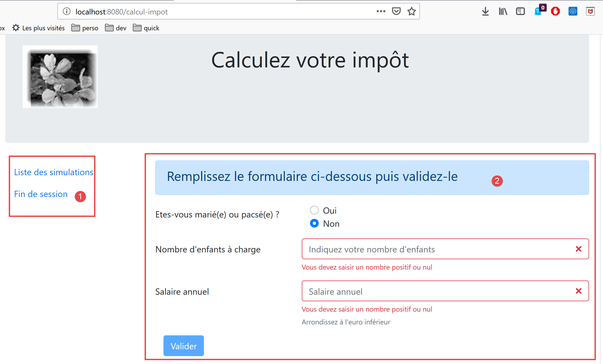
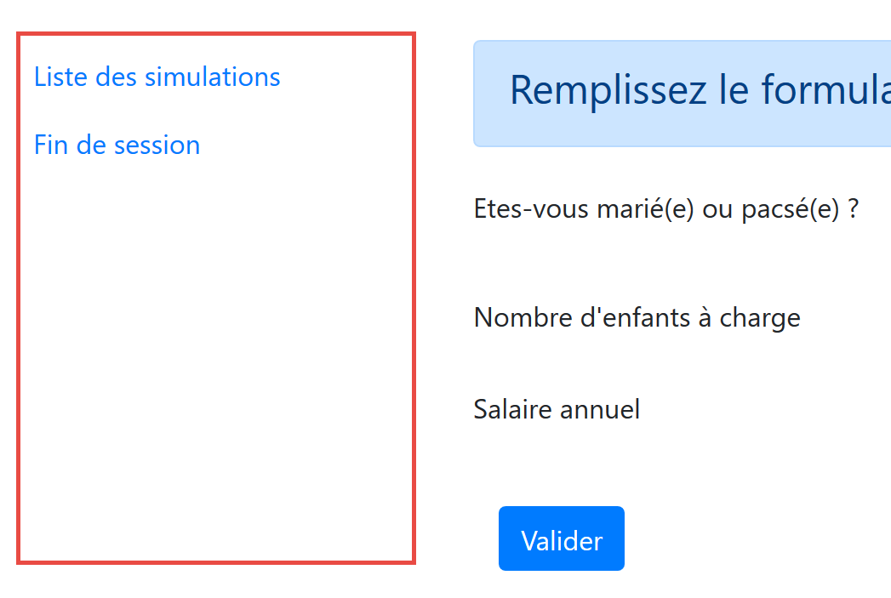
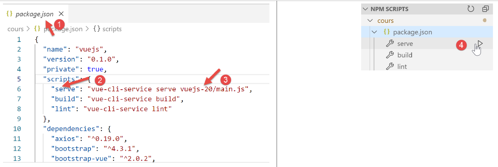
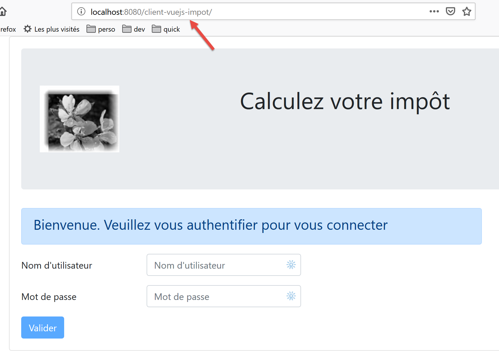
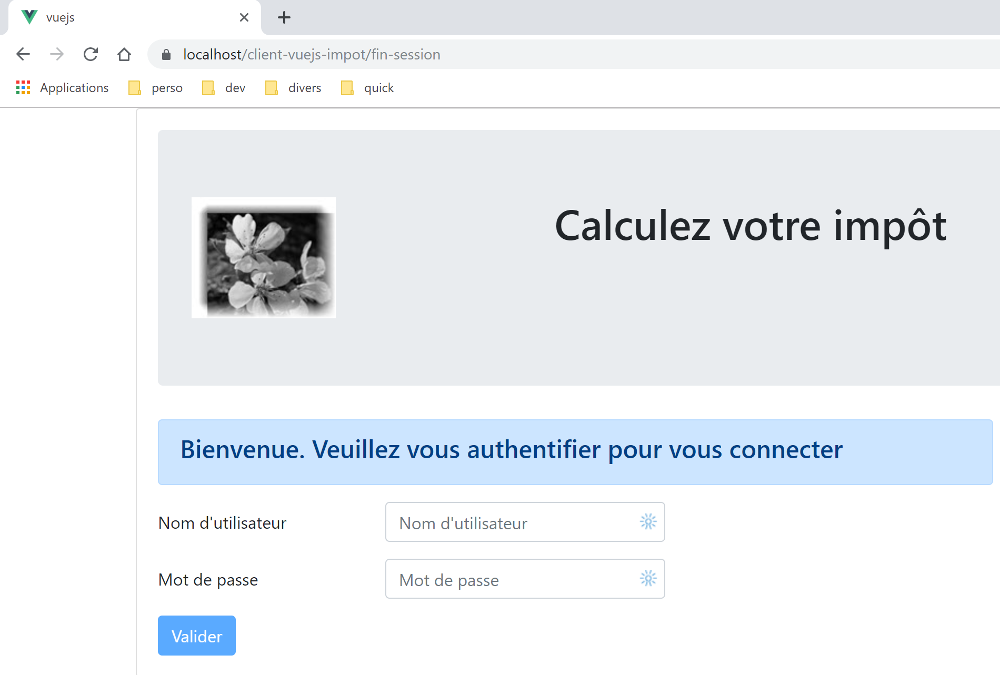
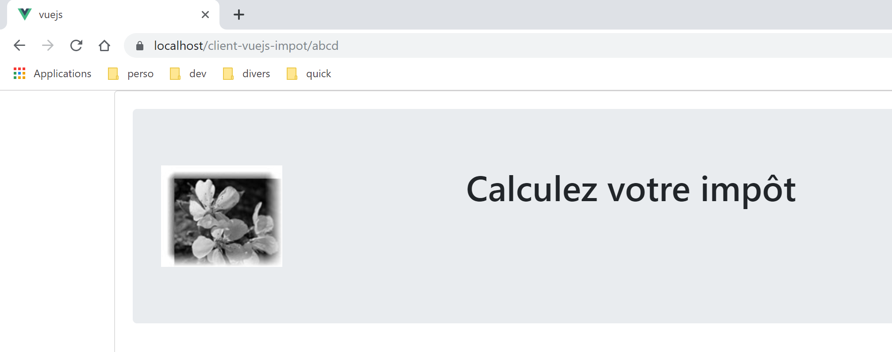

18. Client Vue.js del server di calcolo delle imposte
18.1. Architettura
Implementeremo un'applicazione client/server con la seguente architettura:

Il server di calcolo delle imposte sarà la versione 14, sviluppata nel documento |https://tahe.developpez.com/tutoriels-cours/php7|
18.2. Viste dell'applicazione
Le viste dell'applicazione [vuejs-10] sono quelle della versione 13 del documento |https://tahe.developpez.com/tutoriels-cours/php7| del server di calcolo delle imposte quando utilizzato in modalità HTML. Tuttavia, in questa applicazione, queste viste saranno generate dal client JavaScript anziché dal server PHP.
La prima vista è la vista di autenticazione:

La seconda vista è quella di calcolo delle imposte:

La terza vista mostra l'elenco delle simulazioni eseguite dall'utente:

La schermata sopra mostra che è possibile eliminare la simulazione n. 1. Ciò porta alla seguente schermata:

Se ora si elimina l'ultima simulazione, si ottiene la seguente nuova schermata:

18.3. Elementi del progetto [vuejs-20]
L'albero del progetto [vuejs-20] è il seguente:

Gli elementi del progetto sono i seguenti:
- [assets/logo.jpg]: il logo del progetto;
- [layers]: i livelli [business] e [DAO] dell'applicazione;
- [plugins]: i plugin dell'applicazione;
- [views]: le viste dell'applicazione;
- [config.js]: configura l'applicazione;
- [router.js]: definisce il routing dell'applicazione;
- [store.js]: lo store [Vuex];
- [main.js]: lo script principale dell'applicazione;
18.3.1. I livelli [business] e [DAO]
18.3.1.1. Il livello [DAO]
Il livello [DAO] è implementato dalla classe [Dao] nella sezione |vuejs-10|
18.3.1.2. Il livello [business]
Il livello [business] è implementato dalla classe [Business] nel documento |https://tahe.developpez.com/tutoriels-cours/php7|. Ad essa è stato aggiunto il seguente metodo [setTaxAdminData]:
// constructeur
constructor(taxAdmindata) {
// this.taxAdminData : données de l'administration fiscale
this.taxAdminData = taxAdmindata;
}
// setter
setTaxAdminData(taxAdmindata) {
// this.taxAdminData : données de l'administration fiscale
this.taxAdminData = taxAdmindata;
}
Il metodo [setTaxAdminData] svolge la stessa funzione del costruttore. La sua presenza consente la seguente sequenza:
- istanziare la classe [Métier] con l'istruzione [métier=new Métier()] quando si desidera istanziare la classe ma non si dispone ancora dei dati [taxAdminData];
- quindi popolare la sua proprietà [taxAdminData] in un secondo momento utilizzando un'operazione [métier.setTaxAdminData(taxAdmindata)];
18.3.2. Il file di configurazione [config]
Il file [config.js] è il seguente:
// utilisation de la bibliothèque [axios]
const axios = require('axios');
// timeout des requêtes HTTP
axios.defaults.timeout = 2000;
// la base des URL du serveur de calcul de l'impôt
// le schéma [https] pose des problèmes à Firefox parce que le serveur de calcul
// de l'impôt envoie un certificat autosigné. ok avec Chrome et Edge. Safari pas testé.
axios.defaults.baseURL = 'https://localhost/php7/scripts-web/impots/version-14';
// on va utiliser des cookies
axios.defaults.withCredentials = true;
// export de la configuration
export default {
axios: axios
}
Questa configurazione riguarda la libreria [axios] che il livello [dao] utilizza per effettuare le proprie richieste HTTP. Si noti alla riga 8 che il server opera su una porta sicura [https].
18.3.3. I plugin
I plugin [pluginDao, pluginMétier, pluginConfig] sono progettati per creare tre nuove proprietà per la funzione/classe [Vue]:
- [$dao]: avrà il valore di un'istanza della classe [Dao];
- [$métier]: avrà il valore di un'istanza della classe [Métier];
- [$config]: sarà impostata sull'oggetto esportato dal file di configurazione [config];
[pluginDao]
export default {
install(Vue, dao) {
// ajoute une propriété [$dao] à la classe Vue
Object.defineProperty(Vue.prototype, '$dao', {
// lorsque Vue.$dao est référencé, on rend le 2ième paramètre [dao]
get: () => dao,
})
}
}
[pluginMétier]
export default {
install(Vue, métier) {
// ajoute une propriété [$métier] à la classe Vue
Object.defineProperty(Vue.prototype, '$métier', {
// lorsque Vue.$métier est référencé, on rend le 2ième paramètre [métier]
get: () => métier,
})
}
}
[pluginConfig]
export default {
install(Vue, config) {
// ajoute une propriété [$config] à la classe vue
Object.defineProperty(Vue.prototype, '$config', {
// lorsque Vue.$config est référencé, on rend le 2ième paramètre [config]
get: () => config,
})
}
}
18.3.4. Lo store [Vuex]
Lo store [Vuex] è implementato dal seguente file [store]:
// plugin Vuex
import Vue from 'vue'
import Vuex from 'vuex'
Vue.use(Vuex);
// store Vuex
const store = new Vuex.Store({
state: {
// le tableau des simulations
simulations: [],
// le n° de la dernière simulation
idSimulation: 0
},
mutations: {
// suppression ligne n° index
deleteSimulation(state, index) {
// eslint-disable-next-line no-console
console.log("mutation deleteSimulation");
// on supprime la ligne n° [index]
state.simulations.splice(index, 1);
// eslint-disable-next-line no-console
console.log("store simulations", state.simulations);
},
// ajout d'une simulation
addSimulation(state, simulation) {
// eslint-disable-next-line no-console
console.log("mutation addSimulation");
// n° de la simulation
state.idSimulation++;
simulation.id = state.idSimulation;
// on ajoute la simulation au tableau des simulations
state.simulations.push(simulation);
},
// nettoyage state
clear(state) {
state.simulations = [];
state.idSimulation = 1;
}
}
});
// export de l'objet [store]
export default store;
Commenti
- righe 2-4: il plugin [Vuex] è integrato nel framework [Vue];
- righe 8-13: inseriamo i seguenti elementi nello store [Vuex]:
- [simulations]: l'elenco delle simulazioni eseguite dall'utente;
- [idSimulation]: l'ID dell'ultima simulazione eseguita dall'utente;
Si noti che lo store sarà condiviso tra le viste e che il suo contenuto è reattivo: quando viene modificato, le viste che lo utilizzano vengono aggiornate automaticamente. Nella nostra applicazione, solo l'elemento [simulations] deve essere reattivo, non l'elemento [simulationId]. Abbiamo lasciato quest'ultimo nello store per comodità;
- righe 14–40: le mutazioni consentite sull'oggetto [state] delle righe 8–13. Si noti che queste ricevono sempre l'oggetto [state] delle righe 8–13 come primo parametro;
- riga 16: la mutazione [deleteSimulation] consente di eliminare una simulazione specificandone il numero [index];
- riga 25: la mutazione [addSimulation] consente di aggiungere una nuova simulazione all'array delle simulazioni;
- riga 35: l'operazione [clear] resetta l'oggetto [state] delle righe 8–13;
18.3.5. Il file di routing [router]
Il file di routing è il seguente:
// imports
import Vue from 'vue'
import VueRouter from 'vue-router'
// les vues
import Authentification from './views/Authentification'
import CalculImpot from './views/CalculImpot'
import ListeSimulations from './views/ListeSimulations'
// plugin de routage
Vue.use(VueRouter)
// les routes de l'application
const routes = [
// authentification
{
path: '/', name: 'authentification', component: Authentification
},
// calcul de l'impôt
{
path: '/calcul-impot', name: 'calculImpot', component: CalculImpot
},
// liste des simulations
{
path: '/liste-des-simulations', name: 'listeSimulations', component: ListeSimulations
},
// fin de session
{
path: '/fin-session', name: 'finSession', component: Authentification
}
]
// le routeur
const router = new VueRouter({
// les routes
routes,
// le mode d'affichage des routes dans le navigateur
mode: 'history',
})
// export du router
export default router
Commenti
- riga 16: all'avvio dell'applicazione, viene visualizzata la vista [Authentication] poiché il suo URL è la radice [/];
- riga 20: la vista [TaxCalculation] viene visualizzata quando viene richiesto l'URL [/tax-calculation];
- riga 24: la vista [SimulationList] viene visualizzata quando viene richiesto l'URL [/simulation-list];
- riga 28: la vista [Authentication] viene visualizzata quando viene richiesto l'URL [/end-session];
- righe 33–38: viene creato un oggetto [router] con questi percorsi (riga 35) e la modalità [history] (riga 37) per la gestione degli URL;
- riga 41: questo router viene esportato;
18.3.6. Lo script principale [main.js]
Lo script [main.js] è il seguente:
// imports
import Vue from 'vue'
// vue principale
import Main from './views/Main.vue'
// plugin [bootstrap-vue]
import BootstrapVue from 'bootstrap-vue'
Vue.use(BootstrapVue);
// CSS bootstrap
import 'bootstrap/dist/css/bootstrap.css'
import 'bootstrap-vue/dist/bootstrap-vue.css'
// routeur
import router from './router'
// plugin [config]
import config from './config';
import pluginConfig from './plugins/pluginConfig'
Vue.use(pluginConfig, config)
// instanciation couche [dao]
import Dao from './couches/Dao';
const dao = new Dao(config.axios);
// plugin [dao]
import pluginDao from './plugins/pluginDao'
Vue.use(pluginDao, dao)
// instanciation couche [métier]
import Métier from './couches/Métier';
const métier = new Métier();
// plugin [métier]
import pluginMétier from './plugins/pluginMétier'
Vue.use(pluginMétier, métier)
// store Vuex
import store from './store'
// démarrage de l'UI
new Vue({
el: '#app',
// le routeur
router: router,
// le store Vuex
store: store,
// la vue principale
render: h => h(Main),
})
Si notino i seguenti punti:
- righe 18–21: l'oggetto esportato dallo script [./config] sarà disponibile nella proprietà [Vue.$config] e quindi accessibile a tutte le viste dell'applicazione. In questo caso non era necessario perché l'oggetto [config] viene utilizzato solo dallo script [main] (riga 25). Tuttavia, è comune che la configurazione sia richiesta da più viste. Abbiamo quindi voluto mantenere il principio di renderla disponibile in un attributo della vista;
- righe 24–25: istanziazione del livello [dao]. La classe [Dao] viene importata alla riga 24 e poi istanziata alla riga 25. Il suo costruttore accetta l'oggetto [axios] — una proprietà di configurazione — come unico parametro;
- righe 27–29: il livello [dao] viene reso disponibile nell'attributo [$dao] di tutte le viste;
- righe 31–37: ripetiamo la stessa sequenza per il livello [business]. Il costruttore della classe [Business] accetta [taxAdminData] come parametro, che rappresenta i dati dell'amministrazione fiscale. Non disponiamo ancora di questi dati. L'oggetto [business] alla riga 33 dovrà quindi essere popolato in un secondo momento;
- riga 40: importiamo lo store [Vuex];
- righe 43–51: istanziamo la vista principale [Main] (righe 5 e 50), passandole due parametri:
- riga 46: il router [router] definito alla riga 16;
- riga 48: lo store [Vuex] [store] definito alla riga 40;
- in entrambi i casi, il nome della proprietà è a sinistra e il suo valore a destra. I nomi delle proprietà [router, store] sono impostati dai framework [vue-router] e [vuex]. I valori associati possono essere qualsiasi cosa;
18.4. Le viste dell'applicazione
18.4.1. La vista principale [Main]
Il codice per la vista principale [Main] è il seguente:
<!-- définition HTML de la vue -->
<template>
<div class="container">
<b-card>
<!-- jumbotron -->
<b-jumbotron>
<b-row>
<b-col cols="4">
<img src="../assets/logo.jpg" alt="Cerisier en fleurs" />
</b-col>
<b-col cols="8">
<h1>Calculez votre impôt</h1>
</b-col>
</b-row>
</b-jumbotron>
<!-- erreur requête HTTP -->
<b-alert
show
variant="danger"
v-if="showError"
>L'erreur suivante s'est produite : {{error.message}}</b-alert>
<!-- vue courante -->
<router-view v-if="showView" @loading="mShowLoading" @error="mShowError" />
<!-- loading -->
<b-alert show v-if="showLoading" variant="light">
<strong>Requête au serveur de calcul d'impôt en cours...</strong>
<div class="spinner-border ml-auto" role="status" aria-hidden="true"></div>
</b-alert>
</b-card>
</div>
</template>
<script>
export default {
// name
name: "app",
// inner state
data() {
return {
// controls waiting alert
showLoading: false,
// controls error alert
showError: false,
// controls the display of the current routing view
showView: true,
// an error message
error: ""
};
},
// event managers
methods: {
// asynchronous request error
mShowError(error) {
// eslint-disable-next-line
console.log("Main evt error");
// error msg is displayed
this.error = error;
this.showError = true;
// hide the routed view
this.showView = false;
// we hide the waiting message
this.showLoading = false;
},
// whether or not to display a waiting icon
mShowLoading(value) {
// eslint-disable-next-line
console.log("Main evt showLoading");
// whether or not to display the waiting alert
this.showLoading = value;
}
}
};
</script>
Commenti
- La vista [Main] gestisce il layout della vista instradata e visualizzata. Riga 23:

- Le righe da 5 a 15 mostrano la zona 1;
- la riga 23 visualizza la vista instradata [2];
- Righe 16–19: un avviso visualizzato solo in caso di errore di comunicazione con il server di calcolo delle imposte;
- Righe 25–28: un messaggio di caricamento visualizzato per ogni richiesta HTTP effettuata al server;
- tutte le viste saranno visualizzate con questo layout poiché ogni vista instradata è visualizzata dalle righe 20–24. La vista [Main] viene utilizzata per estrapolare ciò che può essere condiviso dalle diverse viste;
- Riga 23: ogni vista instradata può attivare tre eventi:
- [loading]: è stata inviata una richiesta HTTP. Deve essere visualizzato il messaggio di caricamento;
- [error]: la richiesta HTTP si è conclusa con un errore. Il messaggio di errore deve essere visualizzato e la vista instradata nascosta;
- righe 38–49: lo stato della vista:
- riga 41: [showLoading] controlla la visualizzazione del messaggio che indica che è in corso una richiesta HTTP (riga 25);
- riga 43: [showError] controlla la visualizzazione del messaggio di errore per una richiesta HTTP (righe 17–21);
- riga 45: [showView] controlla la visualizzazione della vista instradata (riga 23);
- righe 53–63: il metodo [mShowError] gestisce l'evento [error] emesso dalla vista instradata (riga 23);
- Righe 65–70: il metodo [mShowLoading] gestisce l'evento [loading] emesso dalla vista instradata (riga 23);
- riga 23: ci concentreremo sugli eventi [error] e [loading]. Questi vengono intercettati solo se la vista instradata è visualizzata [showView=true]. Questo è il motivo per cui la vista instradata viene inizialmente visualizzata (riga 45). Viene nascosta solo in caso di errore (riga 60). Per evitare questo problema, avremmo potuto utilizzare la direttiva [v-show] invece di [v-if]. La differenza tra queste due direttive è la seguente:
- [v-if=’false’] nasconde il blocco controllato rimuovendolo dall’HTML globale. Gli eventi provenienti dalla vista instradata non possono quindi più essere intercettati;
- [v-show=’false’] nasconde il blocco controllato manipolandone il CSS, ma il codice del blocco rimane presente nell’HTML globale e può quindi intercettare gli eventi provenienti dalla vista instradata;
18.4.2. La vista [Layout]
Il codice della vista [Layout] è il seguente:
<!-- definition HTML of the routed view layout -->
<template>
<!-- line -->
<div>
<b-row>
<!-- three-column zone on the left -->
<b-col cols="3" v-if="left">
<slot name="left" />
</b-col>
<!-- nine-column zone on the right -->
<b-col cols="9" v-if="right">
<slot name="right" />
</b-col>
</b-row>
</div>
</template>
<script>
export default {
// paramètres de la vue
props: {
// contrôle la colonne de gauche
left: {
type: Boolean
},
// contrôle la colonne de droite
right: {
type: Boolean
}
}
};
</script>
Commenti
- La vista [Layout] consente di dividere la vista instradata in due aree:
- un'area Bootstrap a 3 colonne sulla sinistra (righe 7–9). Quest'area conterrà il menu di navigazione, se presente;
- un'area a 9 colonne sulla destra (righe 11–13). Quest'area visualizzerà le informazioni fornite dalla vista instradata;
18.4.3. La vista [Authentication]
La vista di autenticazione è la seguente:

Questa vista deriva dalla [Layout] rimuovendo la colonna di sinistra per visualizzare solo quella di destra.
Il codice è il seguente:
<!-- définition HTML de la vue -->
<template>
<Layout :left="false" :right="true">
<template slot="right">
<!-- formulaire HTML - on poste ses valeurs avec l'action [authentifier-utilisateur] -->
<b-form @submit.prevent="login">
<!-- titre -->
<b-alert show variant="primary">
<h4>Bienvenue. Veuillez vous authentifier pour vous connecter</h4>
</b-alert>
<!-- 1ère ligne -->
<b-form-group label="Nom d'utilisateur" label-for="user" label-cols="3">
<!-- zone de saisie user -->
<b-col cols="6">
<b-form-input type="text" id="user" placeholder="Nom d'utilisateur" v-model="user" />
</b-col>
</b-form-group>
<!-- 2ième ligne -->
<b-form-group label="Mot de passe" label-for="password" label-cols="3">
<!-- zone de saisie password -->
<b-col cols="6">
<b-input type="password" id="password" placeholder="Mot de passe" v-model="password" />
</b-col>
</b-form-group>
<!-- 3ième ligne -->
<b-alert
show
variant="danger"
v-if="showError"
class="mt-3"
>L'erreur suivante s'est produite : {{message}}</b-alert>
<!-- bouton de type [submit] sur une 3ième ligne -->
<b-row>
<b-col cols="2">
<b-button variant="primary" type="submit" :disabled="!valid">Valider</b-button>
</b-col>
</b-row>
</b-form>
</template>
</Layout>
</template>
<!-- dynamique de la vue -->
<script>
import Layout from "./Layout";
export default {
// component status
data() {
return {
// user
user: "",
// password
password: "",
// controls the display of an error msg
showError: false,
// the error message
message: "",
// session started
sessionStarted: false
};
},
// components used
components: {
Layout
},
// calculated properties
computed: {
// valid entries
valid() {
return this.user && this.password && this.sessionStarted;
}
},
// event managers
methods: {
// ----------- authentication
async login() {
try {
// start waiting
this.$emit("loading", true);
// blocking server authentication
const response = await this.$dao.authentifierUtilisateur(
this.user,
this.password
);
// end of loading
this.$emit("loading", false);
// response analysis
if (response.état != 200) {
// error is displayed
this.message = response.réponse;
this.showError = true;
return;
}
// no error
this.showError = false;
// --------- we now request data from the tax authorities
// start waiting
this.$emit("loading", true);
// blocking request to the server
const response2 = await this.$dao.getAdminData();
// end of loading
this.$emit("loading", false);
// response analysis
if (response2.état != 1000) {
// error is displayed
this.message = response2.réponse;
this.showError = true;
return;
}
// no error
this.showError = false;
// the received data is stored in the [business] layer
this.$métier.setTaxAdminData(response2.réponse);
// we move on to the tax calculation view
this.$router.push({ name: "calculImpot" });
} catch (error) {
// the error is traced back to the main component
this.$emit("error", error);
}
}
},
// life cycle: the component has just been created
created() {
// eslint-disable-next-line
console.log("authentification", "created");
// start a jSON session with the server
// start waiting
this.$emit("loading", true);
// initialize the session with the server - asynchronous request
// we use the promise rendered by the [dao] layer methods
this.$dao
// initialize a jSON session
.initSession()
// we got the answer
.then(response => {
// end waiting
this.$emit("loading", false);
// response analysis
if (response.état != 700) {
// error is displayed
this.message = response.réponse;
this.showError = true;
return;
}
// the session has started
this.sessionStarted = true;
})
// in case of error
.catch(error => {
// the error is traced back to the [Main] view
this.$emit("error", error);
});
}
};
</script>
Commenti
- riga 3: la vista [Authentication] utilizza solo la colonna destra del [Layout] (righe 3 e 4);
- righe 6–38: il modulo Bootstrap che genera l'area 1 nella schermata sopra;
- riga 6: l'evento [@submit] si verifica quando l'utente fa clic sul pulsante [submit] alla riga 35. Il modificatore [prevent] assicura che la pagina non venga ricaricata al momento dell'[invio]. Avremmo anche potuto scrivere:
- un tag <b-form> senza gestire l'evento [submit];
- un tag <b-button> con l'evento [@click='login'] e senza l'attributo [type='submit'];
Anche questo funziona. Il vantaggio della soluzione scelta è che il modulo viene inviato non solo cliccando sul pulsante [Invia], ma anche premendo il tasto [Invio] nei campi di immissione. La soluzione [<b-form @submit.prevent="login">] è stata quindi scelta qui per comodità dell'utente;
- righe 33–37: un avviso che appare quando il server ha rifiutato le credenziali inserite dall'utente:

- riga 35: il pulsante [Invia] non è sempre attivo. Il suo stato dipende dall'attributo calcolato [valid] nelle righe 71–73. L'attributo [valid] è vero se:
- c'è qualcosa nei campi [user, password] del modulo;
- la sessione JSON è stata avviata. Inizialmente, questa sessione non è stata avviata (riga 59) e quindi il pulsante [Validate] è inattivo.
- righe 49–60: lo stato della vista;
- [user] rappresenta l'input dell'utente nel campo [user] (righe 12–17) del modulo. La direttiva [v-model] alla riga 15 stabilisce un binding bidirezionale tra l'input dell'utente e l'attributo [user] della vista;
- [password] rappresenta l'input dell'utente nel campo [password] (righe 19–24) del modulo. La direttiva [v-model] alla riga 22 stabilisce un binding bidirezionale tra l'input dell'utente e l'attributo [password] della vista;
- [showError] controlla (riga 29) la visualizzazione dell'avviso nelle righe 26-31;
- [message] è il messaggio di errore (riga 31) da visualizzare nell'avviso alle righe 26–31;
- [sessionStarted] indica se la sessione JSON con il server è stata avviata o meno. Inizialmente, questo attributo ha il valore [false] (riga 59). La sessione JSON con il server viene inizializzata nell'evento [created] del ciclo di vita della vista, righe 126–156. Se il server risponde positivamente, l'attributo [sessionStarted] viene impostato su [true] (riga 149);
- righe 126–156: la funzione [created] viene eseguita quando la vista [Authentication] è stata creata (anche se non necessariamente visualizzata). In background, viene quindi inizializzata una sessione JSON con il server. Sappiamo che questa è la prima azione da eseguire con il server di calcolo delle imposte. Per farlo, utilizziamo il livello [dao] dell’applicazione (riga 134). Tutti i metodi in questo livello sono asincroni. Qui, usiamo la Promise restituita dal metodo [$dao.initSession], che inizializza la sessione JSON con il server.
- Righe 138–150: il codice eseguito quando il server restituisce la sua risposta senza errori;
- riga 142: controlliamo la proprietà [status] della risposta. Deve avere il valore [700] affinché l'operazione abbia esito positivo. In caso contrario, si è verificato un errore, la cui causa è indicata nella proprietà [response.response] (riga 144). Visualizziamo quindi il messaggio di errore nella vista (riga 145);
- riga 149: notiamo che la sessione JSON è iniziata;
- righe 152–155: il codice eseguito in caso di errore. Questo errore viene propagato alla vista padre [Main], che
- visualizzerà l'errore;
- nasconde il messaggio di attesa;
- nasconde la vista instradata, la vista [Authentication];
- righe 79–124: il metodo [login] gestisce il clic sul pulsante [Validate];
- riga 79: al metodo è stata anteposta la parola chiave [async] per consentire l'uso della parola chiave [await], righe 84 e 103;
- righe 84–87: chiamata bloccante al metodo [$dao.authenticateUser(user, password)]. Avremmo potuto utilizzare una [Promise] come è stato fatto nella funzione [created]. Volevamo variare gli stili. Non c'è alcun rischio di bloccare l'utente perché abbiamo impostato un [timeout] di 2 secondi su tutte le richieste HTTP. Non dovranno aspettare a lungo. Inoltre, non possono fare nulla finché il server non ha restituito la sua risposta, poiché il pulsante [Validate] rimane inattivo fino a quel momento;
- riga 91: il server di calcolo delle imposte invia risposte JSON, tutte con la struttura [{‘action’:action, ‘status’:val, ‘response’:response}]. L’autenticazione è andata a buon fine se [status==200]. In caso contrario, viene visualizzato un messaggio di errore (righe 93-94);
- riga 98: eventuali messaggi di errore provenienti da un'operazione precedente vengono nascosti;
- righe 99–116: ora richiediamo al server i dati dell’autorità fiscale necessari per calcolare l’imposta. In [this.$métier], abbiamo un’istanza della classe [Métier] che a questo punto non può fare nulla perché non dispone di questi dati;
- riga 103: i dati dell'autorità fiscale vengono richiesti al server tramite un'operazione di blocco;
- righe 107–112: viene analizzata la risposta del server. Deve avere un valore di stato pari a 1000; in caso contrario, si è verificato un errore. In quest'ultimo caso, viene visualizzato un messaggio di errore (righe 109–110);
- righe 113–118: se l'operazione ha esito positivo, noi:
- nascondiamo il messaggio di errore (riga 114);
- passiamo i dati dell'autorità fiscale al livello [business] (riga 116);
- visualizziamo la vista [CalculImpot], riga 118. Ricordiamo che [this.$router] si riferisce al router dell'applicazione. Il metodo [push] viene utilizzato per impostare la vista successiva instradata. Qui, ci riferiamo ad essa tramite il suo attributo [name]. Avremmo potuto anche riferirci ad essa tramite il suo attributo [path]. Queste informazioni si trovano nel file di instradamento:
// calcul de l'impôt
{
path: '/calcul-impot', name: 'calculImpot', component: CalculImpot
},
- righe 119–122: Il blocco [catch] viene attivato quando una delle due richieste HTTP fallisce (server non trovato, timeout superato, ecc.). L'errore viene quindi segnalato alla vista padre [Main], che lo visualizzerà, nasconderà il messaggio di caricamento e nasconderà la vista [Authentication];
18.4.4. La vista [CalculImpot]
La vista [CalculImpot] è la seguente:

- [1]: Un menu di navigazione occupa la colonna di sinistra della vista instradata;
- [2]: Il modulo di calcolo delle imposte occupa la colonna destra della vista instradata;
Il codice per la vista [TaxCalculation] è il seguente:
<!-- definition HTML of the view -->
<template>
<div>
<Layout :left="true" :right="true">
<!-- tax calculation form on the right -->
<FormCalculImpot slot="right" @resultatObtenu="handleResultatObtenu" />
<!-- left-hand navigation menu -->
<Menu slot="left" :options="options" />
</Layout>
<!-- display area for tax calculation results under the form -->
<b-row v-if="résultatObtenu" class="mt-3">
<!-- empty three-column zone -->
<b-col cols="3" />
<!-- nine-column zone -->
<b-col cols="9">
<b-alert show variant="success">
<span v-html="résultat"></span>
</b-alert>
</b-col>
</b-row>
</div>
</template>
<script>
// imports
import FormCalculImpot from "./FormCalculImpot";
import Menu from "./Menu";
import Layout from "./Layout";
export default {
// état interne
data() {
return {
// options du menu
options: [
{
text: "Liste des simulations",
path: "/liste-des-simulations"
},
{
text: "Fin de session",
path: "/fin-session"
}
],
// résultat du calcul de l'impôt
résultat: "",
résultatObtenu: false
};
},
// composants utilisés
components: {
Layout,
FormCalculImpot,
Menu
},
// méthodes de gestion des évts
methods: {
// résultat du calcul de l'impôt
handleResultatObtenu(résultat) {
// on construit le résultat en chaîne HTML
const impôt = "Montant de l'impôt : " + résultat.impôt + " euro(s)";
const décôte = "Décôte : " + résultat.décôte + " euro(s)";
const réduction = "Réduction : " + résultat.réduction + " euro(s)";
const surcôte = "Surcôte : " + résultat.surcôte + " euro(s)";
const taux = "Taux d'imposition : " + résultat.taux;
this.résultat =
impôt +
"<br/>" +
décôte +
"<br/>" +
réduction +
"<br/>" +
surcôte +
"<br/>" +
taux;
// affichage du résultat
this.résultatObtenu = true;
// ---- maj du store [Vuex]
// une simulation de +
this.$store.commit("addSimulation", résultat);
}
}
};
</script>
Commenti
- riga 4: qui sono presenti le due colonne del [Layout];
- riga 6: il modulo di calcolo delle imposte occupa la colonna di destra. Esso attiva l'evento [resultatObtenu] quando è stato ottenuto il risultato del calcolo delle imposte. Si noti che i nomi degli eventi e i nomi dei metodi che li gestiscono non possono contenere caratteri accentati;
- riga 8: il menu di navigazione occupa la colonna di sinistra;
- righe 11–20: il risultato del calcolo delle imposte viene visualizzato sotto il modulo:

- riga 11: il risultato viene visualizzato solo se l'attributo [resultObtained] (riga 47) è [true];
- righe 34–48: lo stato della vista:
- [options]: l'elenco delle opzioni del menu di navigazione. Questo array viene passato come parametro al componente [Menu] alla riga 8;
- [result]: il risultato del calcolo dell'imposta. Questo risultato è una stringa HTML. Per questo motivo, alla riga 17 è stata utilizzata la direttiva [v-html] per visualizzarlo;
- [resultObtained]: il valore booleano che controlla la visualizzazione del risultato, riga 11;
- righe 59–81: il metodo [handleResultatObtenu] visualizza il risultato del calcolo dell'imposta che gli è stato inviato dalla vista figlia [FormCalculImpot], riga 6. Questo risultato è un oggetto con le proprietà [imposta, sconto, riduzione, sovrattassa, aliquota, coniugato, figli, stipendio];
- righe 61–75: l'oggetto [tax, discount, reduction, surcharge, rate] viene inserito nel testo HTML che viene renderizzato dalla riga 17 del template;
- riga 77: questo risultato viene visualizzato;
- Riga 80: chiama il metodo [addSimulation] dello store Vuex, che aggiunge [result] alle simulazioni già presenti nello store;
18.4.5. Il menu di navigazione [Menu]
Il menu di navigazione viene visualizzato nella colonna di sinistra delle viste instradate:

Il codice per la vista [Menu] è il seguente:
<!-- definition HTML of the view -->
<template>
<!-- bootstrap vertical menu -->
<b-nav vertical>
<!-- menu options -->
<b-nav-item
v-for="(option,index) of options"
:key="index"
:to="option.path"
exact
exact-active-class="active"
>{{option.text}}</b-nav-item>
</b-nav>
</template>
<script>
export default {
// paramètres de la vue
props: {
options: {
type: Array
}
}
};
</script>
Commenti
- le opzioni del menu sono fornite dal parametro [options] (righe 7, 20–22);
- ogni elemento dell'array [options] ha una proprietà [text] (riga 12) che rappresenta il testo del link e una proprietà [path] (riga 9) che rappresenta il percorso della vista di destinazione del link;
18.4.6. La vista [FormCalculImpot]
Questa vista fornisce il modulo di calcolo delle imposte:

Il suo codice è il seguente:
<!-- définition HTML de la vue -->
<template>
<!-- formulaire HTML -->
<b-form @submit.prevent="calculerImpot" class="mb-3">
<!-- message sur 12 colonnes sur fond bleu -->
<b-alert show variant="primary">
<h4>Remplissez le formulaire ci-dessous puis validez-le</h4>
</b-alert>
<!-- éléments du formulaire -->
<!-- première ligne -->
<b-form-group label="Etes-vous marié(e) ou pacsé(e) ?" label-cols="4">
<!-- boutons radio sur 5 colonnes-->
<b-col cols="5">
<b-form-radio v-model="marié" value="oui">Oui</b-form-radio>
<b-form-radio v-model="marié" value="non">Non</b-form-radio>
</b-col>
</b-form-group>
<!-- deuxième ligne -->
<b-form-group label="Nombre d'enfants à charge" label-cols="4" label-for="enfants">
<b-input
type="text"
id="enfants"
placeholder="Indiquez votre nombre d'enfants"
v-model="enfants"
:state="enfantsValide"
/>
<!-- message d'erreur éventuel -->
<b-form-invalid-feedback :state="enfantsValide">Vous devez saisir un nombre positif ou nul</b-form-invalid-feedback>
</b-form-group>
<!-- troisème ligne -->
<b-form-group
label="Salaire annuel"
label-cols="4"
label-for="salaire"
description="Arrondissez à l'euro inférieur"
>
<b-input
type="text"
id="salaire"
placeholder="Salaire annuel"
v-model="salaire"
:state="salaireValide"
/>
<!-- message d'erreur éventuel -->
<b-form-invalid-feedback :state="salaireValide">Vous devez saisir un nombre positif ou nul</b-form-invalid-feedback>
</b-form-group>
<!-- quatrième ligne, bouton [submit] sur 5 colonnes -->
<b-col cols="5">
<b-button type="submit" variant="primary" :disabled="formInvalide">Valider</b-button>
</b-col>
</b-form>
</template>
<!-- script -->
<script>
export default {
// inner state
data() {
return {
// married or not
marié: "non",
// number of children
enfants: "",
// annual salary
salaire: ""
};
},
// calculated internal state
computed: {
// form validation
formInvalide() {
return (
// disabled salary
!this.salaireValide ||
// or disabled children
!this.enfantsValide ||
// or tax data not obtained
!this.$métier.taxAdminData
);
},
// salary validation
salaireValide() {
// must be numeric >=0
return Boolean(this.salaire.match(/^\s*\d+\s*$/));
},
// child validation
enfantsValide() {
// must be numeric >=0
return Boolean(this.enfants.match(/^\s*\d+\s*$/));
}
},
// event manager
methods: {
calculerImpot() {
// tax is calculated using the [business] layer
const résultat = this.$métier.calculerImpot(
this.marié,
this.enfants,
this.salaire
);
// eslint-disable-next-line
console.log("résultat=", résultat);
// complete the result
résultat.marié = this.marié;
résultat.enfants = this.enfants;
résultat.salaire = this.salaire;
// the [resultatObtenu] event is issued
this.$emit("resultatObtenu", résultat);
}
}
};
</script>
Commenti
- righe 4–51: il modulo Bootstrap;
- righe 11–17: un gruppo di pulsanti di opzione con le relative etichette;
- righe 14–15: il tag <b-form-radio> visualizza un pulsante di opzione:
- riga 14: la direttiva [v-model] garantisce che, quando si fa clic sul pulsante, l'attributo [married] alla riga 61 venga impostato su [yes] (attributo [value="yes"]);
- riga 15: la direttiva [v-model] garantisce che, quando si fa clic sul pulsante, l'attributo [married] alla riga 61 venga impostato su [no] (attributo [value="no"]);
- righe 19–29: la sezione per l'inserimento del numero di figli:
- riga 24: l'immissione del numero di figli è collegata all'attributo [children] alla riga 63;
- riga 25: la validità dell'inserimento viene verificata dall'attributo calcolato [validChildren] nelle righe 87–89;
- riga 28: assicura che venga visualizzato un messaggio di errore se l'inserimento non è valido;
- righe 31–45: la sezione di inserimento dello stipendio annuale:
- riga 35: visualizza un messaggio di aiuto appena sotto il campo di immissione;
- riga 41: l'inserimento dello stipendio è collegato all'attributo [salary] alla riga 65;
- riga 42: la validità dell'immissione viene verificata dall'attributo calcolato [validSalary] nelle righe 82–85;
- riga 45: visualizza un messaggio di errore se l'immissione non è valida;
- righe 48–50: un pulsante [submit]. Quando si fa clic su questo pulsante o quando un inserimento viene convalidato con il tasto [Invio], viene eseguito il metodo [calculateTax] (riga 94);
- Riga 49: lo stato attivo/inattivo del pulsante è controllato dall'attributo calcolato [formInvalid] nelle righe 71–80;
- Righe 71–80: il modulo è valido se:
- il numero di figli è valido;
- lo stipendio è valido;
- l'applicazione ha ottenuto dal server i dati dell'amministrazione fiscale per calcolare l'imposta. Si noti che questi dati sono memorizzati nella proprietà [$métier.taxAdminData]. La vista [FormCalculImpot] può essere visualizzata prima che questi dati siano stati ottenuti, poiché vengono richiesti in modo asincrono contemporaneamente alla visualizzazione della vista. In questo caso, ci assicuriamo che l'utente non possa cliccare sul pulsante [Convalida] finché i dati non sono stati recuperati;
- righe 94–109: il metodo di calcolo dell'imposta:
- righe 96–100: il livello [business] esegue questo calcolo. Si tratta di un calcolo sincrono. Una volta recuperato [taxAdminData], il client [View] non ha più bisogno di comunicare con il server. Tutto viene eseguito localmente. Otteniamo un oggetto [result] con le proprietà [tax, discount, surcharge, reduction, rate];
- righe 104–106: le proprietà [married, children, salary] vengono aggiunte al risultato;
- riga 108: il risultato viene passato alla vista padre [CalculImpot] tramite l'evento [resultatObtenu]. Questa vista è responsabile della visualizzazione del risultato;
18.4.7. La vista [SimulationList]
La vista [SimulationList] visualizza l'elenco delle simulazioni eseguite dall'utente:

Il codice della vista è il seguente:
<!-- définition HTML de la vue -->
<template>
<div>
<!-- mise en page -->
<Layout :left="true" :right="true">
<!-- simulations dans colonne de droite -->
<template slot="right">
<template v-if="simulations.length==0">
<!-- pas de simulations -->
<b-alert show variant="primary">
<h4>Votre liste de simulations est vide</h4>
</b-alert>
</template>
<template v-if="simulations.length!=0">
<!-- il y a des simulations -->
<b-alert show variant="primary">
<h4>Liste de vos simulations</h4>
</b-alert>
<!-- tableau des simulations -->
<b-table striped hover responsive :items="simulations" :fields="fields">
<template v-slot:cell(action)="data">
<b-button variant="link" @click="supprimerSimulation(data.index)">Supprimer</b-button>
</template>
</b-table>
</template>
</template>
<!-- menu de navigation dans colonne de gauche -->
<Menu slot="left" :options="options" />
</Layout>
</div>
</template>
<script>
// imports
import Layout from "./Layout";
import Menu from "./Menu";
export default {
// composants
components: {
Layout,
Menu
},
// état interne
data() {
return {
// options du menu de navigation
options: [
{
text: "Calcul de l'impôt",
path: "/calcul-impot"
},
{
text: "Fin de session",
path: "/fin-session"
}
],
// paramètres de la table HTML
fields: [
{ label: "#", key: "id" },
{ label: "Marié", key: "marié" },
{ label: "Nombre d'enfants", key: "enfants" },
{ label: "Salaire", key: "salaire" },
{ label: "Impôt", key: "impôt" },
{ label: "Décôte", key: "décôte" },
{ label: "Réduction", key: "réduction" },
{ label: "Surcôte", key: "surcôte" },
{ label: "", key: "action" }
]
};
},
// état interne calculé
computed: {
// liste des simulations prise dans le store Vuex
simulations() {
return this.$store.state.simulations;
}
},
// méthodes
methods: {
supprimerSimulation(index) {
// eslint-disable-next-line
console.log("supprimerSimulation", index);
// suppression de la simulation n° [index]
this.$store.commit("deleteSimulation", index);
}
}
};
</script>
Commenti
- riga 5: la vista occupa entrambe le colonne del [Layout] per le viste instradate;
- righe 7–26: le simulazioni vanno nella colonna di destra;
- riga 28: il menu di navigazione va nella colonna di sinistra;
- righe 8, 14, 20, 75: le simulazioni provengono dallo store [Vuex] [$this.store];
- righe 8–13: viene visualizzato un avviso quando l'elenco delle simulazioni è vuoto;
- righe 14–25: la tabella HTML viene visualizzata quando l'elenco delle simulazioni non è vuoto;
- righe 20–24: la tabella HTML viene generata da un tag <b-table>;
- riga 20: la tabella delle simulazioni è fornita dall'attributo calcolato [simulations] delle righe 74–76;
- riga 20: la tabella HTML è configurata dall'attributo calcolato [fields] nelle righe 58–69. Riga 67: la colonna con chiave [action] è l'ultima colonna della tabella HTML;
- Righe 21–23: modello per l'ultima colonna della tabella HTML;
- riga 22: qui viene posizionato un pulsante di collegamento. Quando viene cliccato, viene chiamato il metodo [deleteSimulation(data.index)], dove [data] rappresenta la riga corrente (riga 21). [data.index] rappresenta il numero di questa riga nell'elenco delle righe visualizzate;
- riga 28: generazione del menu di navigazione. Le sue opzioni sono fornite dall'attributo [options] nelle righe 47–56;
- righe 80–85: il metodo che risponde a un clic sul link [Delete] nella pagina HTML;
- riga 84: viene chiamato il metodo [deleteSimulation] dello store [Vuex] (vedi sezione |vuejs-15|);
18.5. Esecuzione del progetto

È inoltre necessario avviare il server [Laragon] (vedere il documento |https://tahe.developpez.com/tutoriels-cours/php7|) affinché il server di calcolo delle imposte sia online.
18.6. Distribuzione dell'applicazione su un server locale
Attualmente, il nostro client [Vue] è distribuito su un server di prova all'URL [http://localhost:8080]. Lo distribuiremo sul server [Laragon] all'URL [http://localhost:80]. Per farlo, è necessario seguire diversi passaggi.
Passaggio 1
Per prima cosa, ci assicureremo che il client [Vue] sia distribuito sul server di prova all'URL [http://localhost:8080/client-vuejs-impot/].
Creiamo un file [vue.config.js] nella directory principale del nostro progetto [VSCode] attuale:

Il file [vue.config.js] [1] avrà il seguente contenuto:
// vue.config.js
module.exports = {
// l'URL de service du client [vuejs] du serveur de calcul de l'impôt
publicPath: '/client-vuejs-impot/'
}
Dobbiamo anche modificare il file di routing [router.js] [2]:
// imports
import Vue from 'vue'
import VueRouter from 'vue-router'
// les vues
import Authentification from './views/Authentification'
import CalculImpot from './views/CalculImpot'
import ListeSimulations from './views/ListeSimulations'
// plugin de routage
Vue.use(VueRouter)
// les routes de l'application
const routes = [
// authentification
{
path: '/', name: 'authentification', component: Authentification
},
// calcul de l'impôt
{
path: '/calcul-impot', name: 'calculImpot', component: CalculImpot
},
// liste des simulations
{
path: '/liste-des-simulations', name: 'listeSimulations', component: ListeSimulations
},
// fin de session
{
path: '/fin-session', name: 'finSession', component: Authentification
}
]
// le routeur
const router = new VueRouter({
// les routes
routes,
// le mode d'affichage des routes dans le navigateur
mode: 'history',
// l'URL de base de l'application
base: '/client-vuejs-impot/'
})
// export du router
export default router
- riga 39: indichiamo al router che i percorsi delle rotte definite alle righe 13–30 sono relativi al percorso definito alla riga 39. Ad esempio, il percorso alla riga 20 [/calcul-impot] diventerà [/client-vuejs-impot/calcul-impot];
Possiamo quindi testare nuovamente il progetto [vuejs-20] per verificare la modifica dei percorsi dell'applicazione:

Passaggio 2
Ora creeremo la versione di produzione del progetto [vuejs-20]:

- In [1-2], configuriamo l'attività [build] [2] nel file [package.json] [1];
- Nei passaggi [3-5], eseguiamo questa attività. Verrà compilata la versione di produzione del progetto [vuejs-20];
L'attività [build] viene eseguita in un terminale [VSCode]:


- in [3-6], alcuni avvisi indicano che il codice generato è troppo voluminoso e dovrebbe essere suddiviso [8]. Ciò riguarda l'ottimizzazione dell'architettura del codice, argomento che non tratteremo in questa sede;
- In [7], ci viene indicato che la cartella [dist] contiene la versione di produzione generata:

- In [3], il file [index.html] è quello che verrà utilizzato quando viene richiesta l'URL [https://localhost:80/client-vue-js-impot/];
Qui abbiamo un sito statico che può essere distribuito su qualsiasi server. Lo distribuiremo sul server Laragon locale (vedi documento |https://tahe.developpez.com/tutoriels-cours/php7|). La cartella [dist] [2] viene copiata nella cartella [<laragon>/www] [4], dove <laragon> è la cartella di installazione del server Laragon. Rinominiamo questa cartella in [client-vuejs-impot] [5] poiché abbiamo configurato la versione di produzione per l'esecuzione all'URL [/client-vuejs-impot/].
Passaggio 3
Aggiungiamo il seguente file [.htaccess] alla cartella [client-vuejs-impot] appena creata:
<IfModule mod_rewrite.c>
RewriteEngine On
RewriteBase /client-vuejs-impot/
RewriteRule ^index\.html$ - [L]
RewriteCond %{REQUEST_FILENAME} !-f
RewriteCond %{REQUEST_FILENAME} !-d
RewriteRule . /client-vuejs-impot/index.html [L]
</IfModule>

Questo file è un file di configurazione del server web Apache. Se non lo includiamo e richiediamo direttamente l'URL [https://localhost/client-vuejs-impot/calcul-impot], senza passare prima dall'URL [https://localhost/client-vuejs-impot/], otteniamo un errore 404. Con questo file, otteniamo correttamente la vista [CalculImpot].
Una volta fatto ciò, avvia il server Laragon se non l'hai già fatto e vai all'URL [https://localhost/client-vuejs-impot/]:

I lettori sono invitati a provare la versione di produzione della nostra applicazione.
Possiamo modificare il server di calcolo delle imposte sotto un aspetto: le intestazioni CORS che invia sistematicamente ai propri client. Ciò era necessario per la versione client in esecuzione dal dominio [localhost:8080]. Ora che sia il client che il server sono in esecuzione sul dominio [localhost:80], le intestazioni CORS non sono più necessarie.
Modifichiamo il file [config.json] per la versione 14 del server:

- in [4], specifichiamo che le richieste CORS vengono ora rifiutate;
Salviamo questa modifica e richiediamo nuovamente l'URL [https://localhost/client-vuejs-impot/]. Dovrebbe continuare a funzionare.
18.7. Gestione degli URL manuali
Invece di utilizzare i link del menu di navigazione, l'utente potrebbe voler digitare manualmente gli URL dell'applicazione nella barra degli indirizzi del browser. Ad esempio, richiediamo l'URL [https://client-vuejs-impot/calcul-impot] senza passare dalla pagina di autenticazione. Un hacker proverebbe sicuramente a farlo. Otteniamo la seguente visualizzazione:

Otteniamo effettivamente la vista di calcolo delle imposte. Ora proviamo a compilare i campi di input e a inviarli:

Scopriamo quindi che il pulsante [1] [Invia] rimane disabilitato anche se i dati inseriti sono corretti. Diamo un'occhiata al codice della vista [FormCalculImpot]:
<b-col cols="5">
<b-button type="submit" variant="primary" :disabled="formInvalide">Valider</b-button>
</b-col>
Nella riga 2, vediamo che il suo stato attivo/inattivo dipende dalla proprietà [formInvalide]. Si tratta della seguente proprietà calcolata:
formInvalide() {
return (
// salaire invalide
!this.salaireValide ||
// ou enfants invalide
!this.enfantsValide ||
// ou données fiscales pas obtenues
!this.$métier.taxAdminData
);
},
La riga 8 mostra che, affinché il modulo sia valido, è necessario che siano stati ottenuti i dati fiscali. Tuttavia, questi dati vengono ottenuti durante la convalida della vista [Authentication], che l'utente ha "saltato". Pertanto, non sarà in grado di inviare il modulo. Se fosse stato in grado di farlo, avrebbe ricevuto un messaggio di errore dal server indicante che non era autenticato. La convalida deve sempre essere eseguita sul lato server. La convalida lato browser può sempre essere aggirata. È sufficiente un client come [Postman] che invia richieste grezze al server.
Ora richiediamo l'URL [https://localhost/client-vuejs-impot/liste-des-simulations]. Otteniamo la seguente vista:

Ora l'URL [https://localhost/client-vuejs-impot/fin-session]. Otteniamo la seguente visualizzazione:

Ora una pagina che non esiste [https://localhost/client-vuejs-impot/abcd]:

La nostra applicazione gestisce abbastanza bene gli URL digitati manualmente. Quando questi vengono richiamati, il router dell'applicazione ne viene a conoscenza. È quindi possibile intervenire prima che la vista venga visualizzata definitivamente. Lo vedremo nel progetto [vuejs-21].
Un altro punto da considerare è il seguente. Immaginiamo che l'utente abbia eseguito alcune simulazioni secondo le regole:

Ora aggiorniamo la pagina premendo F5:

Abbiamo fatto qualcosa che non è consigliabile: digitare manualmente l'URL (premere F5 equivale sostanzialmente alla stessa cosa). Di conseguenza, abbiamo perso le nostre simulazioni.
Il seguente progetto [vuejs-21] mira a introdurre due miglioramenti:
- convalidare gli URL inseriti dall'utente;
- mantenere lo stato dell'applicazione anche se l'utente digita un URL. Sopra, vediamo che abbiamo perso l'elenco delle simulazioni;